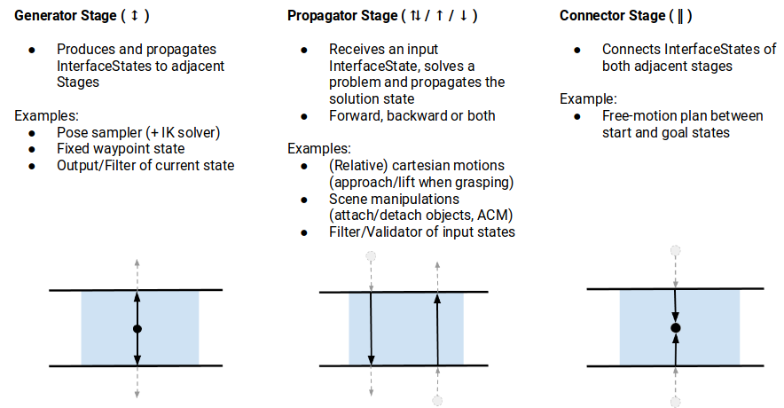
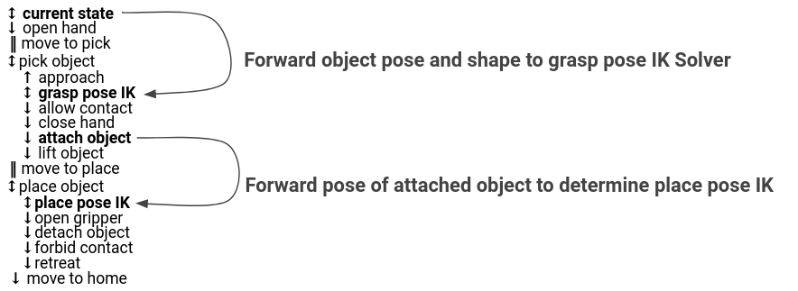

datetime:2025/01/21 17:22
author:nzb
抓放系统
1 基本概念
MTC 的基本思想是，复杂的运动规划问题可以由一系列更简单的子问题组成。 顶层规划问题以任务（Task）的形式指定，而所有子问题则以阶段（Stages）的形式指定。 阶段可以按照任意顺序排列，层次结构仅受各个阶段类型的限制。 阶段的排列顺序受结果传递方向的限制。 与结果流相关的阶段可能有三种：生成器阶段、传播器阶段和连接器阶段：
- 生成器：生成器的计算结果与相邻阶段无关，并可前后双向传递。 例如，几何姿势的 IK 采样器，其接近和离开运动（相邻阶段）取决于解决方案。
- 传播器：接收一个相邻阶段的结果，解决一个子问题，然后将其结果传播给对面站点上的相邻阶段。 根据实现方式的不同，传播阶段可以向前、向后或向两个方向分别传递解决方案。 例如，根据起始或目标状态计算笛卡尔路径的阶段。
- 连接器：并不传播任何结果，而是试图弥合两个邻域的结果状态之间的差距。 例如，计算从一个给定状态到另一个给定状态的自由运动计划。
除了顺序类型，还有不同的层次类型可以封装下级阶段。 没有下级阶段的阶段称为原始阶段，更高级别的阶段称为容器阶段。 有三种容器类型：
- 封装器：封装单个子阶段，并对结果进行修改或过滤。 例如，过滤阶段只接受其子阶段中满足特定约束条件的解决方案，这就可以通过封装器来实现。 这种类型的另一种标准用法包括 IK 封装阶段，它根据标注了姿势目标属性的规划场景生成逆运动学解决方案。
- 序列容器：包含一系列下属阶段，只考虑端到端的解决方案结果。 例如，拣选动作由一系列连贯的步骤组成。
- 并行容器：结合了一组从属阶段，可用于传递最佳备选结果、运行后备求解器或合并多个独立解决方案。 例如，运行自由运动计划的备选规划器，用右手或左手拾取物体作为后备方案，或同时移动手臂和打开夹具。

阶段不仅支持解决运动规划问题。 它们还可用于各种状态转换，例如修改规划场景。 结合使用类继承的可能性，只需依赖一组结构良好的原始阶段，就可以构建非常复杂的行为。更多信息查阅
1.1 求解器
求解器用于定义机器人的运动类型。 MoveIt 任务构造函数有三个求解器选项：
PipelinePlanner：使用MoveIt的规划管道，通常默认为 OMPL。
auto sampling_planner = std::make_shared<mtc::solvers::PipelinePlanner>(node_);
JointInterpolation：是一种简单的规划器，可在起始关节状态和目标关节状态之间进行内插。 它通常用于简单运动，因为计算速度很快，但不支持复杂运动。
auto interpolation_planner = std::make_shared<mtc::solvers::JointInterpolationPlanner>();
CartesianPath用于在笛卡尔空间中直线移动末端执行器，因为直线上的每个点都需要逆解，所以计算速度较慢。
auto cartesian_planner = std::make_shared<mtc::solvers::CartesianPath>();
2.1 阶段

2 使用 MoveIt 任务构造函数设置项目
2.1 创建项目
ros2 pkg create \
--build-type ament_cmake \
--dependencies moveit_task_constructor_core rclcpp \
--node-name mtc_node mtc_tutorial
2.2 编写代码
#include <rclcpp/rclcpp.hpp>
// 包括与机器人模型和碰撞对象连接的功能
#include <moveit/planning_scene/planning_scene.h>
#include <moveit/planning_scene_interface/planning_scene_interface.h>
// 包括示例中使用的 MoveIt 任务构造函数的不同组件
#include <moveit/task_constructor/task.h>
#include <moveit/task_constructor/solvers.h>
#include <moveit/task_constructor/stages.h>
// 将不会在这个初始示例中使用，但当我们向 MoveIt 任务构造函数任务添加更多阶段时，它们将用于生成姿势。
#if __has_include(<tf2_geometry_msgs/tf2_geometry_msgs.hpp>)
#include <tf2_geometry_msgs/tf2_geometry_msgs.hpp>
#else
#include <tf2_geometry_msgs/tf2_geometry_msgs.h>
#endif
#if __has_include(<tf2_eigen/tf2_eigen.hpp>)
#include <tf2_eigen/tf2_eigen.hpp>
#else
#include <tf2_eigen/tf2_eigen.h>
#endif
static const rclcpp::Logger LOGGER = rclcpp::get_logger("mtc_tutorial");
namespace mtc = moveit::task_constructor; // 命名空间别名
class MTCTaskNode
{
public:
MTCTaskNode(const rclcpp::NodeOptions &options);
rclcpp::node_interfaces::NodeBaseInterface::SharedPtr getNodeBaseInterface();
void doTask();
void setupPlanningScene();
private:
// Compose an MTC task from a series of stages.
mtc::Task createTask();
mtc::Task task_;
rclcpp::Node::SharedPtr node_;
};
MTCTaskNode::MTCTaskNode(const rclcpp::NodeOptions &options)
: node_{std::make_shared<rclcpp::Node>("mtc_node", options)}
{
}
rclcpp::node_interfaces::NodeBaseInterface::SharedPtr MTCTaskNode::getNodeBaseInterface()
{
return node_->get_node_base_interface();
}
// 设置规划场景
void MTCTaskNode::setupPlanningScene()
{
moveit_msgs::msg::CollisionObject object;
object.id = "object";
object.header.frame_id = "world";
object.primitives.resize(1);
object.primitives[0].type = shape_msgs::msg::SolidPrimitive::CYLINDER;
object.primitives[0].dimensions = {0.1, 0.02}; // 设置尺寸，一个圆柱体，半径为0.1，高度为0.02
geometry_msgs::msg::Pose pose;
pose.position.x = 0.5;
pose.position.y = -0.25;
pose.orientation.w = 1.0;
object.pose = pose; // 设置位置和方向
moveit::planning_interface::PlanningSceneInterface psi;
psi.applyCollisionObject(object);
}
void MTCTaskNode::doTask()
{
task_ = createTask();
try
{
task_.init(); // 初始化任务
}
catch (mtc::InitStageException &e)
{
RCLCPP_ERROR_STREAM(LOGGER, e);
return;
}
if (!task_.plan(5 /* max_solutions */)) // 在找到 5 个成功计划后停止
{
RCLCPP_ERROR_STREAM(LOGGER, "Task planning failed");
return;
}
task_.introspection().publishSolution(*task_.solutions().front()); // 在 RViz 中发布可视化解决方案--如果不需要可视化，可以删除这一行
auto result = task_.execute(*task_.solutions().front()); // 执行是通过 RViz 插件的动作服务器接口进行的
if (result.val != moveit_msgs::msg::MoveItErrorCodes::SUCCESS)
{
RCLCPP_ERROR_STREAM(LOGGER, "Task execution failed");
return;
}
return;
}
mtc::Task MTCTaskNode::createTask()
{
mtc::Task task;
task.stages()->setName("demo task");
task.loadRobotModel(node_);
const auto &arm_group_name = "panda_arm";
const auto &hand_group_name = "hand";
const auto &hand_frame = "panda_hand";
// Set task properties
task.setProperty("group", arm_group_name);
task.setProperty("eef", hand_group_name);
task.setProperty("ik_frame", hand_frame);
mtc::Stage *current_state_ptr = nullptr; // Forward current_state on to grasp pose generator
auto stage_state_current = std::make_unique<mtc::stages::CurrentState>("current");
current_state_ptr = stage_state_current.get();
task.add(std::move(stage_state_current));
auto sampling_planner = std::make_shared<mtc::solvers::PipelinePlanner>(node_);
auto interpolation_planner = std::make_shared<mtc::solvers::JointInterpolationPlanner>();
auto cartesian_planner = std::make_shared<mtc::solvers::CartesianPath>();
cartesian_planner->setMaxVelocityScalingFactor(1.0);
cartesian_planner->setMaxAccelerationScalingFactor(1.0);
cartesian_planner->setStepSize(.01);
// 该阶段计划移动到 "张开的手 "姿势，这是 SRDF 中为机器人定义的指定姿势。
// clang-format off
auto stage_open_hand = std::make_unique<mtc::stages::MoveTo>("open hand", interpolation_planner);
// clang-format on
stage_open_hand->setGroup(hand_group_name);
stage_open_hand->setGoal("open");
task.add(std::move(stage_open_hand));
// 连接阶段
// clang-format off
auto stage_move_to_pick = std::make_unique<mtc::stages::Connect>("move to pick", mtc::stages::Connect::GroupPlannerVector{ { arm_group_name, sampling_planner } });
// clang-format on
stage_move_to_pick->setTimeout(5.0);
stage_move_to_pick->properties().configureInitFrom(mtc::Stage::PARENT);
task.add(std::move(stage_move_to_pick));
// clang-format off
mtc::Stage* attach_object_stage = nullptr; // Forward attach_object_stage to place pose generator
// clang-format on
// This is an example of SerialContainer usage. It's not strictly needed here.
// In fact, `task` itself is a SerialContainer by default.
{
// 抓取的串行容器，包含很多子阶段
auto grasp = std::make_unique<mtc::SerialContainer>("pick object");
task.properties().exposeTo(grasp->properties(), {"eef", "group", "ik_frame"}); // exposeTo() 在新的串行容器中声明父任务的任务属性
// clang-format off
grasp->properties().configureInitFrom(mtc::Stage::PARENT, { "eef", "group", "ik_frame" }); // configureInitFrom() 对其进行初始化。 这样，所包含的阶段就可以访问这些属性。
// clang-format on
{
// clang-format off
auto stage = std::make_unique<mtc::stages::MoveRelative>("approach object", cartesian_planner); // 传播阶段，允许我们指定从当前位置开始的相对移动。
// clang-format on
stage->properties().set("marker_ns", "approach_object");
stage->properties().set("link", hand_frame);
stage->properties().configureInitFrom(mtc::Stage::PARENT, {"group"});
stage->setMinMaxDistance(0.1, 0.15); // 设定最小和最大移动距离
// Set hand forward direction(设置手部要达到的位姿)
geometry_msgs::msg::Vector3Stamped vec;
vec.header.frame_id = hand_frame;
vec.vector.z = 1.0;
stage->setDirection(vec);
grasp->insert(std::move(stage));
}
/****************************************************
---- * Generate Grasp Pose *
***************************************************/
{
// Sample grasp pose
auto stage = std::make_unique<mtc::stages::GenerateGraspPose>("generate grasp pose"); // 生成抓取位姿阶段
stage->properties().configureInitFrom(mtc::Stage::PARENT);
stage->properties().set("marker_ns", "grasp_pose");
stage->setPreGraspPose("open");
stage->setObject("object");
stage->setAngleDelta(M_PI / 12); // 设置采样角度，delta 越小，抓取方向就越接近，不同方向的抓取越多
stage->setMonitoredStage(current_state_ptr); // Hook into current state
// This is the transform from the object frame to the end-effector frame
// 生成末端执行器位姿，也可以使用 geometry_msgs 的 PoseStamped
Eigen::Isometry3d grasp_frame_transform;
Eigen::Quaterniond q = Eigen::AngleAxisd(M_PI / 2, Eigen::Vector3d::UnitX()) *
Eigen::AngleAxisd(M_PI / 2, Eigen::Vector3d::UnitY()) *
Eigen::AngleAxisd(M_PI / 2, Eigen::Vector3d::UnitZ());
grasp_frame_transform.linear() = q.matrix();
grasp_frame_transform.translation().z() = 0.1;
// Compute IK
// clang-format off
auto wrapper = std::make_unique<mtc::stages::ComputeIK>("grasp pose IK", std::move(stage)); // 逆运动学计算阶段
// clang-format on
wrapper->setMaxIKSolutions(8); // 有些机器人对给定姿势有多个逆运动学求解方案, 这里求解方案数量限制为 8 个
wrapper->setMinSolutionDistance(1.0); // 设置最小求解距离，这是求解差异的阈值：如果某个求解的关节位置与之前的求解过于相似，则该求解将被标记为无效
wrapper->setIKFrame(grasp_frame_transform, hand_frame);
wrapper->properties().configureInitFrom(mtc::Stage::PARENT, {"eef", "group"});
wrapper->properties().configureInitFrom(mtc::Stage::INTERFACE, {"target_pose"});
grasp->insert(std::move(wrapper));
}
{
// 关闭碰撞检测阶段
// clang-format off
auto stage = std::make_unique<mtc::stages::ModifyPlanningScene>("allow collision (hand,object)");
stage->allowCollisions("object",
task.getRobotModel()
->getJointModelGroup(hand_group_name)
->getLinkModelNamesWithCollisionGeometry(),
true);
// clang-format on
grasp->insert(std::move(stage));
}
{
// 夹阶段
auto stage = std::make_unique<mtc::stages::MoveTo>("close hand", interpolation_planner);
stage->setGroup(hand_group_name);
stage->setGoal("close");
grasp->insert(std::move(stage));
}
{
// 再次使用ModifyPlanningScene, 并使用 attachObject 将对象附加到手部
auto stage = std::make_unique<mtc::stages::ModifyPlanningScene>("attach object");
stage->attachObject("object", hand_frame);
attach_object_stage = stage.get();
grasp->insert(std::move(stage));
}
{
// 抬起阶段
// clang-format off
auto stage =
std::make_unique<mtc::stages::MoveRelative>("lift object", cartesian_planner);
// clang-format on
stage->properties().configureInitFrom(mtc::Stage::PARENT, {"group"});
stage->setMinMaxDistance(0.1, 0.3);
stage->setIKFrame(hand_frame);
stage->properties().set("marker_ns", "lift_object");
// Set upward direction
geometry_msgs::msg::Vector3Stamped vec;
vec.header.frame_id = "world";
vec.vector.z = 1.0;
stage->setDirection(vec);
grasp->insert(std::move(stage));
}
task.add(std::move(grasp)); // 把pick阶段添加到任务中
}
{
// 放置连接阶段
// clang-format off
auto stage_move_to_place = std::make_unique<mtc::stages::Connect>(
"move to place",
mtc::stages::Connect::GroupPlannerVector{ { arm_group_name, sampling_planner },
{ hand_group_name, interpolation_planner } });
// clang-format on
stage_move_to_place->setTimeout(5.0);
stage_move_to_place->properties().configureInitFrom(mtc::Stage::PARENT);
task.add(std::move(stage_move_to_place));
}
{
// 放置串行容器
auto place = std::make_unique<mtc::SerialContainer>("place object");
task.properties().exposeTo(place->properties(), {"eef", "group", "ik_frame"});
// clang-format off
place->properties().configureInitFrom(mtc::Stage::PARENT,
{ "eef", "group", "ik_frame" });
// clang-format on
/****************************************************
---- * Generate Place Pose *
***************************************************/
{
// Sample place pose
// 生成放置位姿
auto stage = std::make_unique<mtc::stages::GeneratePlacePose>("generate place pose");
stage->properties().configureInitFrom(mtc::Stage::PARENT);
stage->properties().set("marker_ns", "place_pose");
stage->setObject("object");
geometry_msgs::msg::PoseStamped target_pose_msg;
target_pose_msg.header.frame_id = "object";
target_pose_msg.pose.position.y = 0.5;
target_pose_msg.pose.orientation.w = 1.0;
stage->setPose(target_pose_msg);
// 我们使用 setMonitoredStage，并将先前 attach_object 阶段的指针传递给它。 这样，该阶段就能知道对象是如何附加的了
stage->setMonitoredStage(attach_object_stage); // Hook into attach_object_stage
// Compute IK
// clang-format off
auto wrapper = std::make_unique<mtc::stages::ComputeIK>("place pose IK", std::move(stage)); // IK计算阶段
// clang-format on
wrapper->setMaxIKSolutions(2);
wrapper->setMinSolutionDistance(1.0);
wrapper->setIKFrame("object");
wrapper->properties().configureInitFrom(mtc::Stage::PARENT, {"eef", "group"});
wrapper->properties().configureInitFrom(mtc::Stage::INTERFACE, {"target_pose"});
place->insert(std::move(wrapper));
}
{
auto stage = std::make_unique<mtc::stages::MoveTo>("open hand", interpolation_planner); // 打开手部阶段
stage->setGroup(hand_group_name);
stage->setGoal("open");
place->insert(std::move(stage));
}
{
// clang-format off
auto stage = std::make_unique<mtc::stages::ModifyPlanningScene>("forbid collision (hand,object)"); // 打开禁止碰撞阶段
stage->allowCollisions("object",
task.getRobotModel()
->getJointModelGroup(hand_group_name)
->getLinkModelNamesWithCollisionGeometry(),
false);
// clang-format on
place->insert(std::move(stage));
}
{
auto stage = std::make_unique<mtc::stages::ModifyPlanningScene>("detach object"); // 分离对象阶段
stage->detachObject("object", hand_frame);
place->insert(std::move(stage));
}
{
// 我们使用 "相对移动 "阶段从物体上退下，这与接近物体和提升物体阶段的操作类似。
auto stage = std::make_unique<mtc::stages::MoveRelative>("retreat", cartesian_planner);
stage->properties().configureInitFrom(mtc::Stage::PARENT, {"group"});
stage->setMinMaxDistance(0.1, 0.3);
stage->setIKFrame(hand_frame);
stage->properties().set("marker_ns", "retreat");
// Set retreat direction
geometry_msgs::msg::Vector3Stamped vec;
vec.header.frame_id = "world";
vec.vector.x = -0.5;
stage->setDirection(vec);
place->insert(std::move(stage));
}
task.add(std::move(place)); // 将放置阶段添加到任务中
}
{
// 归零阶段，SRDF中定义的 ready 状态
auto stage = std::make_unique<mtc::stages::MoveTo>("return home", interpolation_planner);
stage->properties().configureInitFrom(mtc::Stage::PARENT, {"group"});
stage->setGoal("ready");
task.add(std::move(stage));
}
return task;
}
int main(int argc, char **argv)
{
rclcpp::init(argc, argv);
rclcpp::NodeOptions options;
options.automatically_declare_parameters_from_overrides(true);
auto mtc_task_node = std::make_shared<MTCTaskNode>(options);
rclcpp::executors::MultiThreadedExecutor executor;
auto spin_thread = std::make_unique<std::thread>([&executor, &mtc_task_node]()
{
executor.add_node(mtc_task_node->getNodeBaseInterface());
executor.spin();
executor.remove_node(mtc_task_node->getNodeBaseInterface()); });
mtc_task_node->setupPlanningScene();
mtc_task_node->doTask();
spin_thread->join();
rclcpp::shutdown();
return 0;
}
2.3 编译运行
我们需要一个启动文件来启动 move_group、ros2_control、static_tf``、robot_state_publisher 和 rviz 节点，它们为我们提供了运行演示的环境。 启动文件。
pick_place_demo.launch.py
from launch import LaunchDescription
from launch_ros.actions import Node
from moveit_configs_utils import MoveItConfigsBuilder
def generate_launch_description():
moveit_config = MoveItConfigsBuilder("moveit_resources_panda").to_dict()
# MTC Demo node
pick_place_demo = Node(
package="mtc_tutorial",
executable="mtc_node",
output="screen",
parameters=[
moveit_config,
],
)
return LaunchDescription([pick_place_demo])
colcon build --mixin releaseros2 launch moveit2_tutorials mtc_demo.launch.py- 另一个终端
ros2 launch moveit2_tutorials pick_place_demo.launch.py
3 更多阅读
Motion Planning Tasks窗格中显示了每个组成阶段的任务。 点击某个阶段，右侧将显示该阶段的其他信息。 右侧窗格显示不同的解决方案及其相关成本。 根据平台类型和机器人配置，可能只显示一种解决方案。
3.1 打印到终端的调试信息
[demo_node-1] 1 - ← 1 → - 0 / initial_state
[demo_node-1] - 0 → 0 → - 0 / move_to_home
- 第一个阶段
- 第一个1表示有一个解决方案被成功逆向传播到前一阶段。
- 箭头之间的第二个 "1 "表示产生了一个解决方案。
- 0 表示一个解决方案没有被成功传播到下一阶段，因为下一阶段失败了。
- 第二个阶段，
MoveTo类型的阶段。 它继承了前一阶段的传播方向，因此两个箭头都指向前方。 0 表示该阶段完全失败。 从左到右，0 表示- 该阶段没有收到上一阶段的解
- 该阶段没有生成解
- 该阶段没有将解传播到下一阶段
在本例中，我们可以看出 "move_to_home "是故障的根本原因。 问题是原点状态发生了碰撞。 定义一个新的、无碰撞的原点位置后，问题就解决了。
3.2 根据名字检索阶段
可以从任务中检索各个阶段的信息。 例如，在这里我们检索一个阶段的唯一 ID：
uint32_t const unique_stage_id = task_.stages()->findChild(stage_name)->introspectionId();